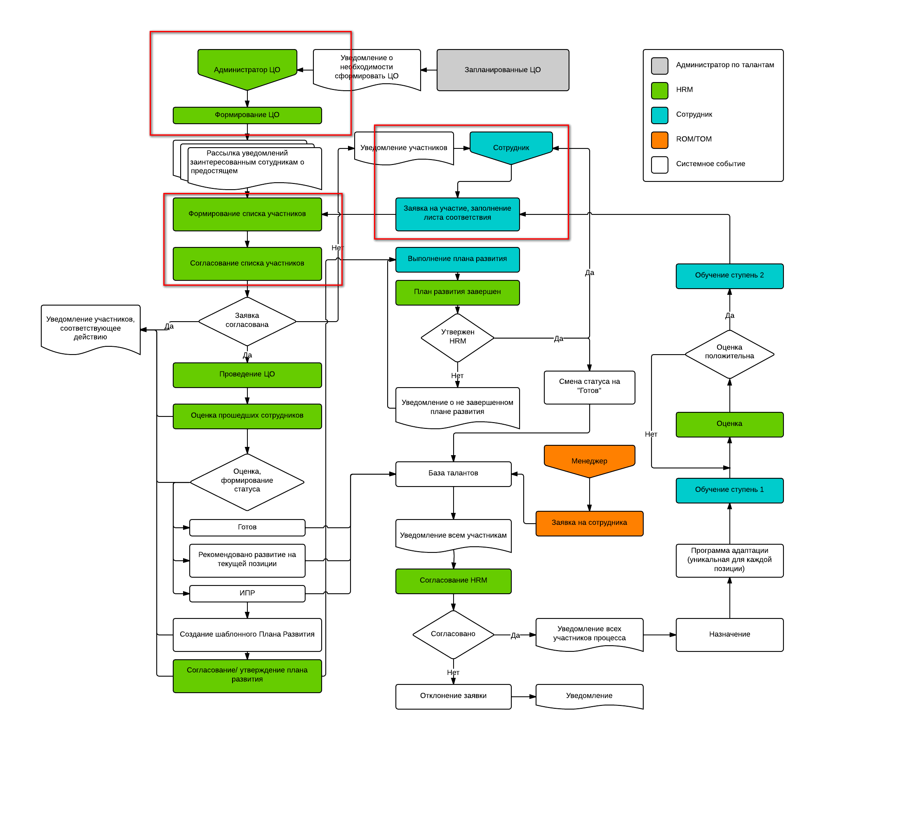

Первая демо версия первого модуля
"Adidas Project Talent"

Что сейчас работает выделенно красным
Функционал доступный сейчас
- Определение уровня доступа сотрудника, формирование личного кабинета в соответствии с уровенем
- Создание новых ЦО
- Просмотр списка ЦО
- Просмотр деталей по ЦО
- Подача заявки на участие в ЦО
- При подачи заявки формируются: заявка, лист соответствия для доступа
- Оценка руководителем компетенций сотрудника
- При согласовании листа соответствия добавление сотрудника в список участников
- Сохранение листа соответствия
- Просмотр анкеты по имени участника или заявителя в участники ЦО
Структура сотрудников для демонсрации:
- Васильева Людмила (v/1) - сотрудник
- Жирова Антонина (g/1) - HRM/Администратор системы
- Калинин Михаил (k/1) - Непосредственный руководитель Васильевой
Создание ЦО, фильтрация и просмотр деталей ЦО
Подача заявки сотрудником на участие в ЦО
Оценка заявки руководителем
Просмотр статуса заявки и допуск к мероприятию HRM
Демо сервер(ссылка)
После авторизации под необходимым пользователем переходите на страницу /view_doc.html?mode=doc_type&object_id=6001030698416824872